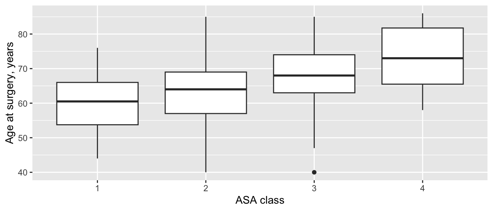

One-way ANOVA, Kruskal-Wallis test, chi-square test and Cox regression: three or more groups of different patients.
Three or more groups of different patients: the four ASA classes, the three surgeons, implants A, B and C. You could compare every pair of groups with the tests on page 6, but each extra test is another chance of a false positive. The tests on this page ask one question first: is there any difference among the groups at all? If the answer is yes, Which groups differ? explains the next step.
Note💡 How every section on this page works
Each section answers one question about the practice cohort. Its first code block loads the packages and the data, so you can jump straight to the section you need. Run that section’s blocks in order, top to bottom.
To keep the code short, the examples use every case, including the 80 patients who had both sides operated on. In a real study, decide how to handle them (page 3) and say what you did.
One-way ANOVA
The question: Does age at surgery differ across ASA classes 1 to 4?
When to use it
The outcome is a measurement, compared across three or more independent groups.
Within each group it’s roughly normal, or each group is reasonably large and not badly skewed (page 3).
The groups have similar spreads: as a rule of thumb, the largest SD is no more than about twice the smallest. If not, use Welch’s ANOVA (see the R vs Python box), especially when the group sizes are unequal.
library(tidyverse)cohort <-read_csv("data/cohort.csv", show_col_types =FALSE) |>mutate(asa =factor(asa)) # ASA class is a group, not a numberggplot(cohort, aes(asa, age)) +geom_boxplot() +labs(x ="ASA class", y ="Age at surgery, years")

cohort |>group_by(asa) |>summarise(n =n(), mean =mean(age), sd =sd(age))
import pandas as pdimport pingouin as pgimport matplotlib.pyplot as pltfrom scipy import statscohort = pd.read_csv("data/cohort.csv")ages = [group["age"] for asa, group in cohort.groupby("asa")] # one list of ages per ASA classfig, ax = plt.subplots(figsize=(6, 3))parts = ax.boxplot(ages, tick_labels=["1", "2", "3", "4"]) # naming the result keeps it out of the outputax.set_xlabel("ASA class")ax.set_ylabel("Age at surgery, years")plt.show()
Age rises steadily with ASA class. The SDs are all close to 9 years, so the spreads are similar. The groups are very different in size, though: 300 procedures in ASA 2, only 18 in ASA 4.
Source SS DF MS F p_unc np2
0 asa 5726.693008 3 1908.897669 23.901792 1.284107e-14 0.107391
1 Within 47599.066992 596 79.864206 NaN NaN NaN
Read the output
asa row: the variation between the group means. Df = 3 (four groups minus one), Sum Sq = 5727.
Residuals (R) or Within (Python): the variation of patients within their groups. Df = 596 (600 procedures minus four groups).
F = 23.9: the between-group variation divided by the within-group variation, each per degree of freedom. If the groups had the same mean, F would be close to 1.
p < 0.001 (R prints 1.28e-14): ages this different across groups would be very unlikely if every ASA class had the same mean age.
Effect size and 95% CI
Omega squared (ω²) is the share of the variation in age that ASA class accounts for, corrected for the small upward bias of the simpler eta squared (η²). As a rough guide, 0.01 is small, 0.06 medium and 0.14 large.
# Effect Size for ANOVA (Type I)
Parameter | Omega2 | 95% CI
---------------------------------
asa | 0.10 | [0.06, 1.00]
- One-sided CIs: upper bound fixed at [1.00].
# omega squared from the ANOVA table: (SS between - df between × MS within) / (SS total + MS within)ss_between, ss_within = age_anova.loc[0, "SS"], age_anova.loc[1, "SS"]df_between, ms_within = age_anova.loc[0, "DF"], age_anova.loc[1, "MS"]omega2 = (ss_between - df_between * ms_within) / (ss_between + ss_within + ms_within)print(omega2)
0.10274386772151635
ω² = 0.10: ASA class accounts for about a tenth of the variation in age, a medium effect. R also prints a one-sided 95% CI (0.06 to 1.00): ω² can’t be negative, so only its lower bound is informative. scipy and pingouin don’t compute this CI. The ANOVA doesn’t say which classes differ: see Which groups differ?.
How to report it
Methods: Age was compared across ASA classes with one-way analysis of variance (ANOVA), with omega squared (ω²) as the effect size.
Results: Mean age was 59.8 years (SD 8.7) in ASA 1 and 73.7 years (SD 9.3) in ASA 4 (one-way ANOVA, F(3, 596) = 23.9, p < 0.001; ω² = 0.10, one-sided 95% CI 0.06 to 1.00).
Warning⚠️ Watch out: ANOVA doesn’t tell you which groups differ
A significant ANOVA means at least one group mean differs from another, not that every group differs from every other. Don’t follow it with a string of unadjusted t tests: that brings back the false-positive problem the ANOVA was meant to avoid. Use a post-hoc test (page 15).
Tip🔀 R vs Python: classic or Welch’s ANOVA
Classic ANOVA assumes the groups have the same spread. R’s aov(), scipy’s f_oneway() and pingouin’s anova() all run it by default.
Welch’s ANOVA doesn’t assume equal spreads. R’s oneway.test() runs Welch’s version by default (add var.equal = TRUE for the classic one), the opposite of aov(). In Python use pg.welch_anova() or stats.f_oneway(..., equal_var=False).
Here the SDs are similar, and Welch’s ANOVA agrees: F = 23.5, p < 0.001.
Kruskal-Wallis test
The question: Does satisfaction 1 year after surgery differ between surgeons S1, S2 and S3?
When to use it
The outcome is ordinal (satisfaction from 1 to 5), skewed, or has a ceiling or floor, compared across three or more independent groups.
Like the Mann-Whitney test, it works on ranks: it asks whether values in some groups tend to be larger than in others.
With two groups it gives essentially the same result as the Mann-Whitney test.
If the outcome is a roughly normal measurement → one-way ANOVA.
Satisfaction was reported for 502 of the 600 procedures. Most were satisfied (4) or very satisfied (5) with every surgeon, and the three distributions look much alike.
satisfaction_test <-kruskal.test(satisfaction_1yr ~ surgeon, data = satisfied)satisfaction_test
Kruskal-Wallis rank sum test
data: satisfaction_1yr by surgeon
Kruskal-Wallis chi-squared = 0.67685, df = 2, p-value = 0.7129
scores = [group["satisfaction_1yr"] for surgeon, group in satisfied.groupby("surgeon")] # one list per surgeonsatisfaction_test = stats.kruskal(*scores)print(satisfaction_test)
Kruskal-Wallis chi-squared = 0.68 (R) or statistic (Python): the H statistic. It measures how far apart the groups’ average ranks are. Both programs correct it for the many tied scores.
df = 2: three groups minus one.
p = 0.713: satisfaction this similar, or less, would be very common if the surgeons’ patients were equally satisfied.
Effect size and 95% CI
Epsilon squared (ε²) is the rank-based counterpart of ω²: the share of the variation in the ranks that the groups account for, from 0 to 1. It is H divided by (n − 1).
set.seed(2026) # its CI comes from a bootstrap (random resampling); a seed makes it repeatableeffectsize::rank_epsilon_squared(satisfaction_1yr ~ surgeon, data = satisfied)
Epsilon2 (rank) | 95% CI
------------------------------
1.35e-03 | [0.00, 1.00]
- One-sided CIs: upper bound fixed at [1.00].
ε² = 0.001: surgeon accounts for essentially none of the variation in satisfaction. R’s one-sided CI runs from 0.00 to 1.00; it comes from a bootstrap, which is why the code sets a seed. scipy has no function for it.
How to report it
Methods: Satisfaction at 1 year (a 5-point ordinal scale) was compared across surgeons with the Kruskal-Wallis test, with epsilon squared (ε²) as the effect size.
Results: Of 600 procedures, 502 had a satisfaction score at 1 year. The median was 4 (IQR 4 to 5) for surgeon S1 and 5 (IQR 4 to 5) for surgeons S2 and S3 (Kruskal-Wallis H = 0.68, df = 2, p = 0.713; ε² = 0.001, one-sided 95% CI 0.00 to 1.00).
Warning⚠️ Watch out: missing answers aren’t random
Satisfaction is missing for 98 procedures. If unhappy patients were less likely to answer, every surgeon looks better than they are, and the comparison can be biased too. Always report how many answered in each group, and consider whether non-response differs between groups.
Tip🔀 R vs Python: ties and the data format
Both kruskal.test() and stats.kruskal() correct H for ties, so they agree even with a 5-point scale full of tied scores. R takes a formula (outcome ~ group); scipy takes one list of values per group, which is why the Python code builds scores first.
Chi-square test
The question: Do 90-day complication rates differ between surgeons S1, S2 and S3?
When to use it
The outcome is categorical (here yes/no), compared across three or more independent groups: an r × c table.
Every expected count should be at least 5. If not, combine categories that make sense together, or use Fisher’s exact test, which R’s fisher.test() runs exactly on larger tables too. scipy’s stats.fisher_exact() accepts larger tables but estimates their p-value by random resampling, so it changes a little from run to run.
Expected counts: what each cell would hold if complication rates were the same for every surgeon. The smallest is 13.3, so the test is valid.
X-squared = 3.62, df = 2: the chi-square statistic, with (3 surgeons − 1) × (2 outcomes − 1) = 2 degrees of freedom.
p = 0.163: differences like these would be fairly common if the three surgeons had the same complication rate.
Effect size and 95% CI
Cramér’s V measures the strength of association in a table, from 0 (none) to 1 (perfect). For a table with 2 columns, about 0.1 is small, 0.3 medium and 0.5 large.
V = 0.08, a small association. For yes/no outcomes, the complication rate in each group (with its CI, as on page 4) is usually more informative than V.
How to report it
Methods: Complication rates were compared across surgeons with the chi-square test, with Cramér’s V as the effect size.
Results: Complications within 90 days followed 15 of 232 procedures by surgeon S1 (6.5%), 24 of 211 by S2 (11.4%) and 12 of 157 by S3 (7.6%) (χ² = 3.62, df = 2, p = 0.163; Cramér’s V = 0.08, one-sided 95% CI 0.00 to 1.00).
Warning⚠️ Watch out: no Yates’ correction here, and check the expected counts
Yates’ continuity correction (page 6) only applies to 2 × 2 tables, so both programs skip it for this 3 × 2 table. The expected-count rule still applies: Exercise 3 shows a table that breaks it, and what to do.
Tip🔀 R vs Python: two versions of Cramér’s V
effectsize’s cramers_v() applies a small-sample bias correction by default (0.05 here). scipy’s association() doesn’t (0.08). We set adjust = FALSE in R so the two match. Either is acceptable; say which you report.
Cox regression
The question: Does the risk of revision differ between implants A, B and C?
When to use it
The outcome is time until an event (revision), compared across three or more independent groups.
The log-rank test extends to three or more groups and answers “do the curves differ?”. Cox regression also gives a hazard ratio for each group against a reference group, and can adjust for other variables.
It assumes each group’s risk is a steady multiple of the reference group’s over time (proportional hazards). Page 14 shows how to check that and covers Cox regression in full.
implant_cox <-coxph(Surv(followup_years, revised) ~ implant, data = cohort) # implant A is the referencesummary(implant_cox)
Call:
coxph(formula = Surv(followup_years, revised) ~ implant, data = cohort)
n= 600, number of events= 81
coef exp(coef) se(coef) z Pr(>|z|)
implantB -0.2020 0.8171 0.3092 -0.653 0.514
implantC 1.1208 3.0673 0.2579 4.345 1.39e-05 ***
---
Signif. codes: 0 '***' 0.001 '**' 0.01 '*' 0.05 '.' 0.1 ' ' 1
exp(coef) exp(-coef) lower .95 upper .95
implantB 0.8171 1.224 0.4458 1.498
implantC 3.0673 0.326 1.8502 5.085
Concordance= 0.659 (se = 0.03 )
Likelihood ratio test= 27.64 on 2 df, p=1e-06
Wald test = 29.63 on 2 df, p=4e-07
Score (logrank) test = 33.48 on 2 df, p=5e-08
implant_cox = CoxPHFitter().fit( cohort[["followup_years", "revised", "implant"]], duration_col="followup_years", event_col="revised", formula="implant", # implant A is the reference fit_options={"precision": 1e-9}, # stop only when fully converged; see the R vs Python box)print(implant_cox.summary[["exp(coef)", "exp(coef) lower 95%", "exp(coef) upper 95%", "p"]])
exp(coef): the hazard ratio of each implant against implant A, the reference. Implant B: 0.82; implant C: 3.07.
lower .95 / upper .95: the 95% CIs. Implant B’s (0.45 to 1.50) includes 1, so the data are compatible with no difference from A. Implant C’s (1.85 to 5.09) doesn’t.
Pr(>|z|): the p-value for each implant against A (p = 0.514 for B, p < 0.001 for C).
Likelihood ratio test = 27.6 on 2 df, p < 0.001: the overall test that implant matters at all, the Cox counterpart of the ANOVA’s F test. Python prints it as the second number.
Score (logrank) test = 33.5: the log-rank test for all three implants, which Python prints last. (The Cox score test and the log-rank test handle tied revision times slightly differently, so they agree to one decimal, not exactly.)
Effect size and 95% CI
The hazard ratios with their 95% CIs are the effect sizes: implant C carried about three times the hazard of revision of implant A (3.07, 95% CI 1.85 to 5.09), while implant B didn’t differ clearly from A (0.82, 95% CI 0.45 to 1.50).
How to report it
Methods: Revision-free survival was compared across implants with Cox proportional hazards regression, with implant A as the reference.
Results: Compared with implant A, the hazard ratio for revision was 3.07 (95% CI 1.85 to 5.09) for implant C and 0.82 (95% CI 0.45 to 1.50) for implant B (likelihood ratio test for implant type, χ² = 27.6, df = 2, p < 0.001).
Warning⚠️ Watch out: the reference group shapes the story
Every hazard ratio here is relative to implant A, so the output doesn’t compare B with C directly. Choose the reference group on purpose (the standard implant, the largest group) and say which it is. And as on page 4, deaths here are treated as censored; page 13 covers competing risks.
Tip🔀 R vs Python: convergence and the reference group
Both programs use the first group alphabetically (A) as the reference and handle tied revision times with Efron’s method. lifelines’ default convergence rule stops a little early here (a hazard ratio of 0.81713 for implant B instead of 0.81709), so we tighten it with fit_options={"precision": 1e-9}.
Which groups differ?
The tests above answer “is there any difference among the groups?”. When the answer is yes, the next question is which groups differ from which. Comparing every pair with an ordinary test inflates the chance of a false positive: with four ASA classes there are six pairs, and six tests at p < 0.05 give roughly a one-in-four chance of at least one false alarm even when nothing is going on.
Post-hoc tests compare the pairs while keeping that overall error rate at 5%:
Tukey’s HSD controls false positives on its own, and so do Dunn’s test and other pairwise tests once Holm’s adjustment is applied, so none of them needs a significant overall test first. Decide before you see the data which comparisons you’ll make, and say so in your Methods (page 15).
Exercises
The solutions use the packages and data loaded in the sections above, so run the page from the top first.
1. Does BMI differ across ASA classes? Run a one-way ANOVA and report ω².
Results: Mean BMI was 26.3 kg/m² (SD 4.9) in ASA 1 and 36.2 kg/m² (SD 3.3) in ASA 4 (F(3, 596) = 31.1, p < 0.001; ω² = 0.13, one-sided 95% CI 0.09 to 1.00).
That’s no surprise: obesity is one of the things anesthesiologists weigh when they assign an ASA class.
2. A colleague asks whether length of stay differs between the three surgeons. Which test would you use, and what do you find?
TipSolution
Length of stay is strongly right-skewed with many ties (page 3), and there are three independent groups: the Kruskal-Wallis test.
Kruskal-Wallis rank sum test
data: los_days by surgeon
Kruskal-Wallis chi-squared = 0.73189, df = 2, p-value = 0.6935
set.seed(2026)effectsize::rank_epsilon_squared(los_days ~ surgeon, data = cohort)
Epsilon2 (rank) | 95% CI
------------------------------
1.22e-03 | [0.00, 1.00]
- One-sided CIs: upper bound fixed at [1.00].
stays = [group["los_days"] for surgeon, group in cohort.groupby("surgeon")]los_test = stats.kruskal(*stays)print(los_test, los_test.statistic / (len(cohort) -1))
# R also warns here: "Chi-squared approximation may be incorrect"chisq.test(table(cohort$asa, cohort$complication_90d))$expected # two expected counts are below 5
Fisher's Exact Test for Count Data
data: asa_grouped
p-value = 0.02762
alternative hypothesis: true odds ratio is not equal to 1
95 percent confidence interval:
1.034232 3.626792
sample estimates:
odds ratio
1.920984
ASA 1 and ASA 4 each have an expected count of complications below 5 (3.1 and 1.5), so the chi-square test isn’t reliable; R says so itself, with the warning “Chi-squared approximation may be incorrect”. Combining classes into ASA 1–2 and ASA 3–4 makes clinical sense and gives a 2 × 2 table for Fisher’s exact test:
Results: Complications within 90 days followed 30 of 264 procedures (11.4%) in ASA 3–4 patients and 21 of 336 (6.2%) in ASA 1–2 patients (risk difference 5.1 percentage points, 95% CI 0.5 to 9.7; odds ratio 1.92, 95% CI 1.03 to 3.63; p = 0.028).
Say in your Methods that you combined the classes, and why.